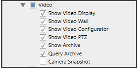
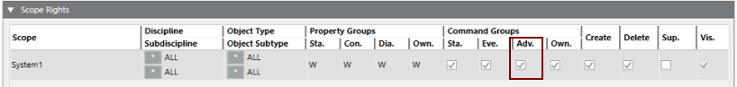

Disabling Snapshot Functionality
The snapshot capability allows users to save a screenshot of a video stream either by clicking the snapshot overlay icon on a monitor, or using the Snapshot command in the Extended Operation tab. See Taking a Snapshot of a Video Stream.
You can partially or entirely disable access to snapshots in the following ways:
Prerequisites
- System Manager is in Engineering mode.
- System Browser is in Management View
Remove the Overlay Icon
The overlay icon on a monitor takes a snapshot that is saved in the Windows Pictures folder of the currently logged-in user, on the station where the icon is clicked. You can remove the overlay icon for a user group as follows.
- In System Browser, select Project > System Settings > Security.
- In the Security tab, under Groups select the user group for which you want to disable the snapshot overlay.
- In the Application Rights expander, expand the Video group.
- Clear the Camera Snapshot check box.

- Click Save
 .
. - Repeat steps 3 to 5 above for any other user groups as required.
NOTE: This procedure only removes the snapshot overlay icon. To also remove the Snapshot command, use the method below.
Remove the Snapshot Command
The Snapshot command button in the Extended Operation tab is only available to user groups with Advanced Command Group rights. Therefore, one simple way to remove this command for a user group is to enable only the Standard Command Group rights.
- In System Browser, select Project > System Settings > Security.
- In the Security tab, under Groups select the user group for which you want to disable Advanced Command Group rights.
- In the Scope Rights expander, under Command Groups, clear the Adv. flag.

- Click Save .
- Repeat steps 2 to 4 above for any other user groups as required.